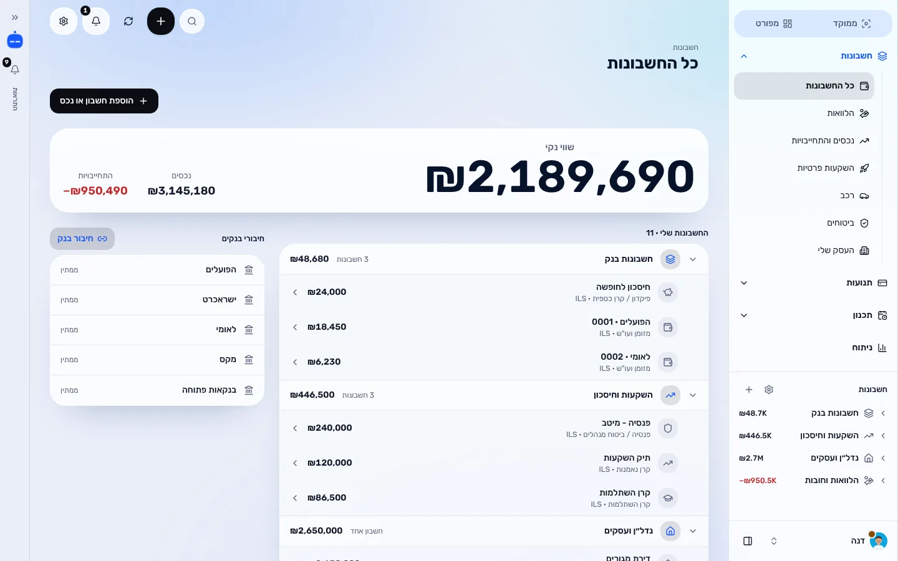
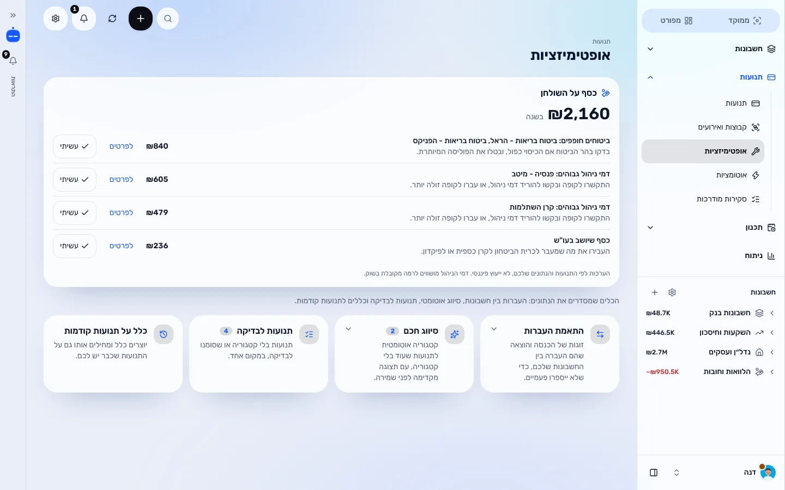

איך מייבאים את דוח הפנסיה מהסוכן ובודקים את דמי הניהול.
הדוח התקופתי שהסוכן או היועץ שולח מכיל את כל החיסכון לטווח ארוך במקום אחד. ייבוא אחד מכניס אותו ל-Penny, ומשם רואים מה שווה כל מוצר וכמה אתם משלמים עליו.
משיגים את הדוח התקופתי
מבקשים מסוכן הביטוח או מהיועץ את הדוח התקופתי: פנסיה, קרן השתלמות, קופת גמל והביטוחים שבהם. זה לא דוח המסלקה הפנסיונית, ש-Penny עדיין לא קוראת.
ממירים אותו ל-JSON
Penny לא קוראת את קובץ ה-PDF עצמו. צריך להוציא ממנו את הנתונים לקובץ JSON במבנה של קובץ הדוגמה. כל כלי שמפיק את המבנה הזה מתאים. המבנה המלא.
- תאריך הדוח, בצורה YYYY-MM-DD
- סך החיסכון, מתוך הסיכום של הדוח עצמו
- לכל מוצר: סוג, שם, חברה ויתרה
- אם רוצים: דמי ניהול, הפקדה חודשית והביטוחים שבדוח
מייבאים את הקובץ
בהגדרות ← חשבונות וייבוא, בקבוצה פנסיה, השתלמות ובתי השקעות, מוצאים את ייבוא דוח פנסיה. יש שם קישור לקובץ דוגמה. לוחצים בחירת קובץ JSON ובוחרים את הקובץ.
בודקים מה נכנס
בסיום כתוב כמה מוצרים וכמה פוליסות יובאו. כל מוצר נכנס לנכסים עם השווי שלו בתאריך הדוח, דמי הניהול וההפקדה החודשית. כל פוליסה נכנסת לביטוחים, עם פרמיה חודשית.


בודקים את דמי הניהול מול השוק
בכסף על השולחן מופיעים דמי ניהול שגבוהים מהמקובל בשוק, עם הסכום השנתי והצעד הבא. אחרי שטיפלתם, לוחצים עשיתי, והחיסכון נספר.


מרעננים כשמגיע דוח חדש
מייבאים את הדוח החדש באותה דרך. מוצר שכבר קיים מתעדכן ולא משוכפל, ומה ששיניתם בעצמכם, כמו שם הנכס או ההערות על פוליסה, נשמר.
טוב לדעת
- הייבוא נבדק מול הסיכום של הדוח עצמו: אם סכום המוצרים לא מתאים לסך החיסכון, הקובץ נדחה ושום דבר לא נכנס.
- קריאה אוטומטית של דוח המסלקה הפנסיונית עדיין בתוכנית העבודה. בינתיים יש במחשבונים מדריך לקריאת הדוח.
- ההשוואה לשוק היא הערכה, לא ייעוץ פנסיוני.
- הקובץ נקרא ונשמר על המחשב שלכם, ושום דבר ממנו לא יוצא החוצה.
שאלות ותשובות
הגוף שלי מסתנכרן ישירות. צריך בכל זאת את הדוח?
לא חייבים. מיטב, אלטשולר שחם, הפניקס, אקסלנס טרייד, הראל, מגדל, כלל ומנורה מתחברים ישירות ומעדכנים את היתרות. הדוח מוסיף דמי ניהול, הפקדות וביטוחים. עוד על פנסיה וחיסכון.
הייבוא נכשל. מה בודקים?
שהקובץ הוא JSON תקין, שהוא מתאים לקובץ הדוגמה, ושסכום היתרות של המוצרים שווה לסך החיסכון שבסיכום.
מה קורה אם אייבא את אותו דוח פעמיים?
הוא מתעדכן ולא משוכפל. אותו דוח מזוהה לפי התאריך, שם העמית והמקור.
רוצים לראות קודם עם משק בית לדוגמה?
גרסת ההתנסות היא האפליקציה המלאה, רצה בדפדפן, עם שנה של תנועות, תקציבים, פנסיה ויעדים מומצאים. בלי הרשמה, ושום דבר לא מגיע לבנק, לספק AI או לטלגרם.